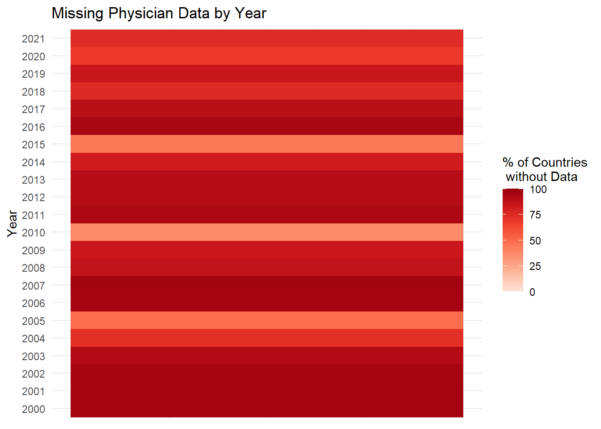

This is from the United Nations website. The data look at how much countries spend on healthcare as a percentage of GDP and total government expenditure in the years 2005, 2010, 2015, 2018, 2019, and 2020. The data are collected by the World Health Organization (WHO) and reviewed annually using government expenditure records and official statistics. The WHO makes modifications and estimates when needed to ensure consistency and comprehensiveness. Some potential issues with this data involve differences in reporting standards for different countries. Some countries use a calendar year for their reports while others use fiscal years that start on many different days throughout the year depending on the country. The data are posted by the United Nations and was most recently updated on October 25, 2023 using data that was pulled in April 2023. The data are in csv format and have 2,262 rows and 7 columns. It will be imported into R as a csv file. Link to data.
UN/WHO Data on Health Personnel by Country
This is also from the United Nations website. This data captures the raw number of physicians, nurses, dentists, and pharmacists operating in each country between the years 2000 and 2021. It also records the number of people working in these occupations per 1000 people in each country. The data is collected by the WHO from a combination of national reporting, national censuses, labor force surveys, and administrative and national sources. The definition of a health worker occupation is classified according to the definition of the International Standard Classification of Occupations. The dataset is not without complications. Given the disparate reporting methods of countries around the world, different countries report data for different years, and there is not a single year between 2000 and 2021 for which every country has reported data. Moreover, there is no single way that countries report or calculate this data, so different countries will be arriving at their estimates in different ways. The dataset was posted by the United Nations and was last updated on October 25, 2023, with data last being pulled in April 2023. The data comes as a csv file and has 5,884 rows and 7 columns. It will be imported to R as a csv. Link to data.
WHO/GCO Data on Cancer Incidence and Mortality by Country
These datasets report the incidence rates and mortality rates of cancer by country in 2022. It is collected by the WHO and reported through the Global Cancer Observatory (GCO). The data are collected differently depending on the country. Some countries have national counts. Other countries have sub-national counts, and other countries do not have data so the WHO uses models to make estimates. This could pose some problems with analysis because the numbers for different countries are based on different methods of calculation. In some cases, the WHO extrapolates the data of a city or sub-region within the country to the overall country. In other cases, the WHO looks at rates in neighboring countries and applies those rates to the population of a country. Alternatively, they create models to estimate the prevalence and mortality rates. Because of the mix in raw data vs modeling data, it may not be comparing apples to apples in every country, but the WHO is the leading organization for this type of work and their numbers are probably the best that are possible to find. Both the incidence and mortality datasets have 13 columns and 186 rows. They are both csv files and will be imported into R as a csv. Link to incidence data.Link to mortality data.
National Center for Health Statistics - Percent Cancer Estimate for Demographics
This website is the National Center for Health Statistics website. This source collects data from the following source: the CDC’s National Health Interview Survey (NHIS). The CDC selects survey participants yearly and attempts to survey them via telephone or in person via representative.The CDC conducts the survey. Survey responses are conducted via telephone or in person by a census bureau representative. The data is in a csv file and is imported into R. The data is a percentage of the group represented in the tab. Based on the website, the survey is completed yearly and there are results for each year from 2019-2023. The dimensions of this data in R is a data frame of 380 rows by 5 total columns.To import the data, each individual parameter should be downloaded as a csv file from the website for this data set. Then, each csv file should be read into R using read_csv from the tidyverse package. The data should then be merged together using full_join and join_by = (Year,Group,Subgroup,Estimate,Flag).
WHO: Existence of Operational Policy/Strategy/Action Plan for Cancer
The data seems to be collected per country and corresponds with a “yes” or “no” to the state “Existence of operational policy/strategy/action plan for cancer.” There is no indication of how the countries are contacted or what questions they are asked to deduce the results. The World Health Organization collected this data. There is no indication of how countries were contacted or which questions they were asked to result in answer of “yes” or “no” in this data set. The data is located in csv files. There is an individual csv file that contains each parameter that is in selection drop down of the associated link. The csv files from this source are merged using full_join from the tidyverse package in R. The survey results are “yes”,”no” or “no response” to the existence of operational policies,strategies or action plans for cancer. The data was last updated on April 25th, 2022. However, there is no statement of how often the data is updated. Since, there is data for 2021, 2019, 2017, 2015, and 2013, it seems that data is collected every two years. The next update may be for the year 2023 if the update trend continues. The merged data (all parameters combined) is a data frame with 970 rows by 34 columns. Some countries have a value of “No Response” and their action plan for cancer cannot be assessed for certain years. This data can be downloaded as a csv file per parameter on the associated link and then read into RStudio using the read_csv function from the tidyverse package. Each file needs to be individually imported into R using the read_csv function.
library(dplyr)library(ggplot2)library(RColorBrewer)#write.csv(un_health_personnel, "un_health_personnel.csv")un_health_personnel <-read.csv("un_health_personnel.csv")un_health_personnel |>filter(Series =="Health personnel: Physicians (number)") |>group_by(Year) |>summarize(count=n()) |>mutate(missing_percent =100- (((count)/n_distinct(un_health_personnel$Region.Country.Area))*100)) |>ungroup() -> un_health_personnel_number_summaryggplot(data = un_health_personnel_number_summary, aes(x=1, y=as.factor(Year)))+geom_tile(aes(fill=missing_percent))+labs(y="Year", fill ="% of Countries\n without Data", title ="Missing Physician Data by Year")+scale_fill_distiller(palette ="Reds", direction =1, limits =c(0,100))+theme_minimal()+theme(axis.title.x =element_blank(),axis.text.x =element_blank(),axis.ticks.x =element_blank())

The data for number of physicians operating inside countries is inconsistently reported depending on the country. Every country has reported some data between 2000 and 2021, but very few years have a majority of countries reporting. It appears that 2010 and 2015 are the years that have the most countries reporting this data. 2005, 2020, and 2004 are also years where more countries have reported this data. To make up for the inconsistency of the reporting, we will ultimately take averages across several year spans in order to get usable data for the most countries possible. In this range, some countries will have reported data for several of the years. Others may have only reported data for one year, but averaging across several years of data will allow us to draw comparisons across as many countries as possible over a similar time span.
WHO: Existence of Operational Policy/Strategy/Action Plan for Cancer
Code
library(tidyverse)OperationalPolicy <-read_csv("OperationalPolicy.csv", show_col_types =FALSE)Counts <- OperationalPolicy |>group_by(Value,Period) |>summarise(count =n()) |>mutate(Value =factor(Value))ggplot(Counts, aes(x=fct_reorder(Value,count, .desc=TRUE), y = count, fill ="red")) +geom_bar(stat ="identity") +labs(x ="Value From Survey", y ="Count", title ="Count of Recorded Responses")+theme(legend.position="none",axis.text.x =element_text(angle=90,hjust=1,size=8))+facet_wrap(~Period)
Analysis: The intended values of this survey are meant to be “yes” there exists a operational policy or plan for cancer or “no” there does not exist an operation policy or plan for cancer. Instead, there are some countries that are labeled as “No data received”, “Don’t Know”, “No response” or “88” all of which will be interpreted as there is no information from this country. There is a total of 43 data points from which there are no information. Some countries that have reported data for certain years, have not reported to this survey for other years.